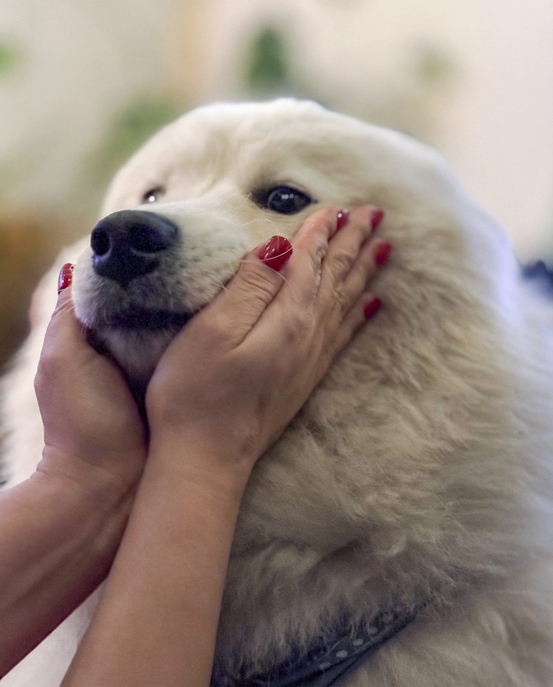

IMG_1003.jpeg
Multi-LLM Analysis
77.0/100
Consensus Score
Original Review
A heartwarming image that relies heavily on its emotional content. The technical edits should focus on cleaning up the 'indoor' feel (yellow cast and noise) without making the image look sterile or losing its soft, dreamy atmosphere.
- Reduce color temperature (Cool White Balance)
- Apply luminance noise reduction
- Selective sharpening/texture on the nose and fingernails
This is a charming, intimate pet close-up with pleasing background separation and solid exposure. The main opportunities are correcting the slightly warm indoor cast, reducing moderate noise, and using selective edits to bring more attention and detail to the dog’s eye and fur while keeping the cozy mood.
- Cool white balance slightly and add a touch of magenta (e.g., Temp -300 to -700K, Tint +3 to +8) to reduce the yellow/green indoor cast while keeping a warm feel
- Reduce luminance noise (e.g., Luminance NR 15–30) and apply light color noise reduction (e.g., 20–30), then add mild sharpening with masking (Amount 40–70, Masking 60–90)
- Local adjustments on the face: lift shadows around the eye and muzzle slightly (+10 to +25), lower highlights on bright fur (-10 to -25), and add a small clarity/texture boost on fur (+5 to +15); add subtle dodge/catchlight enhancement to the visible eye
Analysis failed: Error code: 400 - {'type': 'error', 'error': {'type': 'invalid_request_error', 'message': 'messages.0.content.0.image.source.base64: image exceeds 5 MB maximum: 5461968 bytes > 5242880 bytes'}, 'request_id': 'req_011CXeE1UN43syfF2M2fwQ96'}
Combined Improvements Applied:
- Reduce color temperature (Cool White Balance)
- Apply luminance noise reduction
- Selective sharpening/texture on the nose and fingernails
- HSL Adjustment: Desaturate yellows and adjust orange luminance
- Cool white balance slightly and add a touch of magenta (e.g., Temp -300 to -700K, Tint +3 to +8) to reduce the yellow/green indoor cast while keeping a warm feel
- Reduce luminance noise (e.g., Luminance NR 15–30) and apply light color noise reduction (e.g., 20–30), then add mild sharpening with masking (Amount 40–70, Masking 60–90)
- Local adjustments on the face: lift shadows around the eye and muzzle slightly (+10 to +25), lower highlights on bright fur (-10 to -25), and add a small clarity/texture boost on fur (+5 to +15); add subtle dodge/catchlight enhancement to the visible eye
- Crop slightly from the left and bottom to reduce the dominance of the forearms/harness and center the dog’s eye/face more strongly (maintain enough hands for context)
Before & After Comparison